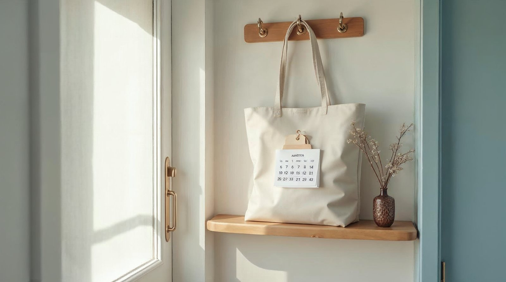

이종호 한의사 감수좋은꿈참사랑한의원 대표원장 (한의사 면허번호 19769)발행 2026-11-22 · 수정 2026-11-26
이 글의 차례
진료실 문을 열고 들어오셔서 의자에 앉으십니다. 집에서 나설 때만 해도 할 말이 많았습니다. 무릎이 언제부터 아팠는지, 밤에 깨는 게 벌써 몇 주째인지, 요즘 밥맛까지 없다는 것까지요.
그런데 막상 "어디가 불편해서 오셨어요?"라는 질문을 받으면 머릿속이 하얘집니다. "아, 그냥… 무릎이 좀 아파서요." 그렇게 진료를 마치고 집에 돌아가는 길, 버스 창밖을 보다가 "아, 그 얘기를 안 했네" 하고 아쉬워하시지요.
진료실에서 이런 일을 정말 자주 봅니다. 그리고 그건 그분 잘못이 아닙니다. 낯선 곳에서, 하얀 가운을 입은 사람 앞에 앉으면 누구나 조금은 긴장합니다. 저도 다른 병원에 환자로 가면 똑같습니다.
그래서 저는 진료 전에 짧은 메모를 적어 오시길 권합니다. 긴 글이 아니어도 됩니다. "언제부터, 어떤 동작에서, 얼마나." 이 세 가지만 몇 줄 적어 오셔도 이야기가 훨씬 잘 이어집니다.
왜 메모 한 장이 그렇게 도움이 될까요
"무릎이 아파요"와 "평지는 괜찮은데 계단 내려갈 때 오른쪽 무릎 안쪽이 시큰해서 난간을 잡아요"는 같은 무릎 이야기지만, 제가 살펴볼 곳이 전혀 다릅니다. 앞의 말은 무릎 전체를 처음부터 다 여쭤봐야 하고, 뒤의 말은 벌써 어디를 어떻게 봐야 할지 길이 좁혀집니다. 메모는 그 길을 미리 닦아 오시는 일입니다.
증상은 날마다 달라집니다. 어제는 많이 아팠는데 오늘 진료 받으러 오는 날은 이상하게 괜찮을 때가 있지요. 그러면 "오늘은 괜찮은데요…" 하고 말끝을 흐리게 됩니다.
그럴 때 메모가 있으면 "그저께 저녁엔 7 정도로 아팠어요"라고 그날의 기억을 그대로 꺼내 보여 주실 수 있습니다. 기억은 시간이 지나면 흐려지고, 아픈 날의 강도는 괜찮은 날엔 잘 떠오르지 않습니다.
그리고 다음 진료 때 비교할 기준이 생깁니다. 치료를 이어 가다 보면 "좀 나아진 것 같기도 하고 그대로인 것 같기도 하고"라는 말씀을 하실 때가 많은데, 지난번 메모가 있으면 같은 동작, 같은 시간대를 기준으로 무엇이 달라졌고 무엇이 그대로인지 함께 볼 수 있습니다.
잘 쓰려고 하지 않으셔도 됩니다
메모라고 하면 무언가 정확하고 자세하게 써야 할 것 같아 부담을 느끼시는 분이 있습니다. 그렇지 않습니다. 오히려 세 줄 정도의 짧은 메모가 이야기를 더 잘 이어 줍니다. 길게 쓰다 보면 정작 가장 힘든 것이 묻혀 버리기도 하거든요.
의학 용어로 쓰실 필요도 전혀 없습니다. "찌릿하다", "묵직하다", "쑤신다", "뻐근하다", "시리다", "화끈거린다". 평소에 쓰는 말이 제게는 가장 정확한 말입니다. 어떤 분은 "모래가 낀 것 같다"고, 어떤 분은 "누가 꽉 쥐고 있는 것 같다"고 적어 오시는데, 그런 표현이 저한테는 오래 기억에 남고 도움이 됩니다.
사소하다고 빼지 마세요. "이건 별것 아니라서 안 적었어요" 하신 것이 나중에 이야기를 풀어 가는 실마리가 되는 경우가 생각보다 많습니다. 아침에 손이 붓는 것 같다든지, 요즘 유난히 목이 마르다든지, 저녁만 되면 발이 차다든지. 한 줄이면 됩니다.
이렇게 적어 오시면 됩니다
어떻게 적을지 막막하시면 아래 순서를 따라가 보세요. 빈칸이 있어도 괜찮습니다. 휴대폰 메모장에 그대로 옮겨 쓰셔도 됩니다.
- 가장 불편한 것 한 가지: 어디가, 어떻게
- 언제부터: 며칠 전, 몇 주 전, 어떤 일이 있고 나서
- 어떤 때 심해지나요: 계단, 앉았다 일어날 때, 아침, 밤, 식사 뒤
- 얼마나: 0~10 숫자, 또는 "난간을 잡는다", "밤에 깬다"처럼 생활로
- 나아지게 하는 것: 쉬면, 따뜻하게 하면, 움직이면
- 요즘 잠·소화·대변·기분 한 줄
- 드시는 약과 영양제, 다른 병원에서 들은 이야기
예를 들어 이런 식입니다. "오른쪽 무릎 안쪽. 3주 전 등산 다녀온 뒤부터. 계단 내려갈 때 심함, 평지는 괜찮음. 6 정도, 난간 잡음. 찜질하면 좀 편함. 요즘 무릎 때문에 밤에 한두 번 깸." 이 정도면 충분합니다. 이렇게 적어 주신 분과는 첫 5분 만에 이야기가 한참 진도를 나갑니다.
가장 힘든 것 하나를 고르는 법
불편한 곳이 여러 군데라 무엇을 맨 위에 적어야 할지 모르겠다는 분도 많습니다. 그럴 땐 이렇게 스스로 물어보세요. "이 가운데 딱 하나만 오늘 나아질 수 있다면 무엇을 고를까?" 혹은 "요즘 내 하루를 가장 많이 방해하는 게 뭘까?"
밤에 잠을 깨우는 것, 출근길을 힘들게 하는 것, 아이를 안아 주지 못하게 하는 것. 그 대답이 맨 윗줄입니다. 나머지는 그 아래에 순서 없이 적어 두셔도 괜찮습니다. 진료실에서 맨 윗줄부터 함께 풀어 가다 보면, 아랫줄 이야기들이 그 위의 이야기와 이어져 있는 경우도 자주 봅니다.
'얼마나'를 숫자로 말하기 어려우실 때
0에서 10 사이 숫자로 아픈 정도를 말해 달라고 하면 난감해하시는 분이 많습니다. "5인지 6인지 모르겠어요." 괜찮습니다. 숫자가 정확할 필요는 없습니다. 같은 분이 같은 기준으로 매번 적어 주시는 게 중요할 뿐입니다.
숫자가 영 어색하시면 생활로 적어 주세요. "참을 만하다", "일하다가 멈추게 된다", "밤에 깬다", "아무것도 못 하겠다". 이런 말이 오히려 숫자보다 많은 것을 알려 줍니다. 계단을 몇 층까지 오를 수 있는지, 몇 분 걸으면 쉬어야 하는지 같은 것도 좋은 기준이 됩니다.
종이든 휴대폰이든, 편한 방법이면 됩니다
메모를 꼭 종이에 쓰실 필요는 없습니다. 휴대폰 메모장도 좋고, 가족과 주고받는 메신저 대화창에 나에게 보내기로 적어 두셔도 됩니다. 글로 쓰기 번거로우시면 휴대폰 녹음 기능에 "오늘 저녁에 허리가 6 정도로 아팠음, 오래 서 있었음" 하고 말로 남겨 두셔도 괜찮습니다.
손가락 마디가 붓거나 피부에 무언가 올라왔다면 사진을 찍어 두세요. 진료 당일에는 가라앉아 있을 수 있어서, 사진 한 장이 긴 설명보다 많은 것을 보여 줄 때가 있습니다.
달력에 표시하는 방법도 있습니다. 불편한 날에 동그라미, 심한 날에 세모, 잠을 설친 날에 별표. 한 달을 넘겨 보면 어느 요일, 어느 주에 유난히 힘드셨는지가 눈에 들어옵니다. 여성분이라면 생리 주기와 함께 적어 두시면 몸의 흐름을 이해하는 데 큰 도움이 됩니다.
다른 병원에서 들은 이야기도 한 줄로
이미 다른 병원에 다녀오셨다면 그 이야기도 메모에 적어 주세요. 어떤 검사를 받았는지, 무슨 말을 들었는지, 어떤 치료를 받았고 해 보니 어땠는지. "정형외과 엑스레이, 뼈는 괜찮다고 함. 물리치료 2주 받음." 이 정도면 됩니다. 결과지가 있으면 가져오시고, 없으면 기억나는 대로 적어 주셔도 괜찮습니다.
이 이야기를 여쭙는 건 다른 병원의 진료를 평가하려는 것이 아닙니다. 지금까지 어떤 길을 걸어오셨는지 알아야, 제가 같은 질문을 반복하지 않고 그다음 이야기부터 이어 갈 수 있기 때문입니다. 이미 여러 번 같은 설명을 하느라 지치셨을 분께 처음부터 다시 말해 달라고 하는 건 미안한 일이니까요.
메모를 쓰다 보면 본인이 먼저 알게 되는 것
재미있는 건, 메모를 며칠 적다 보면 진료실에 오시기 전에 본인이 먼저 무언가를 알아채신다는 점입니다. "적어 보니 커피 많이 마신 날 밤에 꼭 깨더라고요." "주말엔 허리가 덜 아픈데, 회사 의자 때문인가 봐요." 이런 말씀을 들으면 저는 참 반갑습니다. 몸이 보내던 신호를 본인이 직접 읽어 내신 거니까요.
물론 메모가 진단을 대신할 수는 없습니다. 다만 내 몸에서 언제 무슨 일이 일어나는지 가장 오래, 가장 가까이에서 지켜보는 사람은 결국 본인입니다. 메모는 그 관찰을 잊지 않게 붙잡아 두는 도구이고, 저는 그걸 바탕으로 진맥과 진찰을 더해 함께 생각해 보는 사람입니다.
이런 분들이 많습니다
실제 한 분의 이야기가 아니라 진료실에서 자주 보는 모습들입니다.
예를 들어 점심시간에 잠깐 들르는 직장인이라면, 출근길 지하철에서 휴대폰 메모에 "언제부터, 어떤 동작에서, 얼마나" 세 줄만 적어 오셔도 충분합니다. 시간이 빠듯한 분일수록 메모가 큰 힘을 발휘합니다.
예를 들어 시험 준비로 바쁜 수험생이라면, 공부하다 목이나 허리가 불편했던 시간대와 그날 잠든 시간을 한 줄씩 적어 오시면 하루의 흐름이 잘 보입니다. 보호자분이 곁에서 본 모습, 예를 들어 요즘 자꾸 고개를 숙이고 있다거나 밥을 남긴다는 이야기를 덧붙여 주셔도 좋습니다.
예를 들어 여러 군데가 불편한 어르신이라면, 가장 힘든 곳 하나를 맨 위에 적고 나머지는 아래에 이어 적으시면 됩니다. 한 번에 다 말씀하시려다 보면 오히려 가장 중요한 것을 놓치기 쉽습니다. 오늘은 맨 위 것부터, 나머지는 다음에 차근차근 여쭤 갈 수 있습니다.
메모를 꺼내기가 쑥스러우시다면
"이런 걸 적어 오면 유난스러워 보일까 봐요." 메모를 가방에 넣어 오시고도 끝내 꺼내지 못하고 돌아가시는 분이 있다는 걸 나중에 알게 될 때가 있습니다. 그럴 때마다 저는 마음이 좀 아픕니다. 전혀 유난스럽지 않습니다. 오히려 저는 메모를 내미시는 손을 보면 "이분이 오늘 오시기 전에 자기 몸을 한 번 더 생각해 보셨구나" 싶어 고마운 마음이 듭니다.
진료실에 앉으시면 그냥 "적어 온 게 있는데요" 하고 휴대폰 화면을 보여 주시거나 종이를 건네주세요. 제가 소리 내어 읽으면서 하나씩 여쭤 보겠습니다. 말로 설명하기 어려운 내용, 예를 들어 화장실 이야기나 마음이 가라앉는 이야기처럼 입 밖으로 꺼내기 망설여지는 것도 메모에 적어 오시면 한결 수월하게 나눌 수 있습니다.

다시 오시는 날의 메모
두 번째, 세 번째 오실 때는 메모가 더 짧아도 됩니다. 지난 치료 뒤 달라진 점 한 가지, 아직 그대로인 점 한 가지, 새로 생긴 불편이나 바뀐 약. 이 세 가지면 됩니다.
치료를 이어 가는 동안에는 하루 한 줄, 같은 동작과 같은 시간대를 기준으로 적어 보시면 변화가 잘 보입니다. "아침 첫 계단 4", "저녁 계단 6"처럼요.
매일 쓰기 어렵다면 불편이 크게 느껴진 날만이라도 적어 주세요. 1~2주가 지나도 메모 속 불편이 그대로이거나 점점 심해진다면 다음 진료 때 꼭 말씀해 주세요. 그런 이야기는 듣기 싫은 소식이 아니라, 제가 방향을 다시 생각해 볼 수 있는 소중한 단서입니다.
좋은꿈참사랑한의원에 처음 오시면
처음 오시면 저는 메모를 함께 보며 가장 불편한 점부터 충분히 듣습니다. 메모에 없는 것은 제가 하나씩 여쭙니다. 그리고 양손을 내어 달라고 말씀드리고 양쪽 손목의 맥을 차례로 짚습니다.
맥을 짚는 동안 저는 아픈 곳 말고 다른 것도 여쭙니다. 잠은 어떻게 주무시는지, 식사 뒤 속은 편한지, 대변은 어떤지, 몸이 찬 편인지 더운 편인지요.
무릎 때문에 오셨는데 왜 잠을 묻는지 의아하실 수도 있습니다. 그런데 몸은 따로따로 움직이지 않아서, 아픈 곳이 잠을 흔들고 흔들린 잠이 다시 통증을 크게 느끼게 하는 경우가 많습니다. 메모에 생활 이야기가 한 줄 있으면 저는 그 줄에서부터 질문을 이어 갑니다.
필요하다고 판단되면 혀를 보거나 배를 살피고, 초음파나 인바디 같은 장비로 상태를 더 확인하기도 합니다. 그렇게 살펴본 뒤 지금 상태를 제가 어떻게 이해했는지 말씀드리고, 침·약침·추나·한약 상담 등 방법을 상태에 맞춰 함께 정합니다. 귀가 전에는 다음에 메모해 오시면 좋을 점도 한두 가지 말씀드립니다.
이런 증상은 먼저 확인이 필요합니다
- 갑자기 시작된 심한 통증이나 빠르게 심해지는 통증
- 열이 나면서 숨이 차거나, 가슴 통증이 함께 있는 경우
이런 신호가 있으면 한의원보다 가까운 병원이나 응급실을 먼저 찾으세요.
함께 읽으면 좋은 글
- 통증이 어느 정도인지는 한의원에서 숫자로 어떻게 표현하면 되나요?
- 진료 전에 하고 싶은 말을 세 줄로 정리하면 상담이 어떻게 달라지나요?
- 다시 방문했을 때 어떤 말로 시작하면 진료가 이어지나요?
메모를 쓰는 일은 결국 내 몸을 한 번 더 들여다보는 일입니다. 바쁜 하루 중에 잠깐이라도 그렇게 해 주신다면, 그것만으로도 이미 스스로를 잘 챙기고 계신 겁니다. 다음에 오시면 저는 "메모 가져오셨어요?"보다 "요즘 제일 힘든 게 뭐세요?"를 먼저 여쭙겠습니다. 메모는 그다음에 함께 펼쳐 보면 됩니다.

먼저 확인이 필요한 신호
- 갑자기 시작된 심한 통증이나 빠르게 심해지는 통증
- 열이 나면서 숨이 차거나, 가슴 통증이 함께 있는 경우
왜 메모 한 장이 그렇게 도움이 될까요
- "무릎이 아파요"와 "평지는 괜찮은데 계단 내려갈 때 오른쪽 무릎 안쪽이 시큰해서…
- 앞의 말은 무릎 전체를 처음부터 다 여쭤봐야 하고, 뒤의 말은 벌써 어디를 어떻게…
잘 쓰려고 하지 않으셔도 됩니다
- 메모라고 하면 무언가 정확하고 자세하게 써야 할 것 같아 부담을 느끼시는 분이 있습…
- 그렇지 않습니다.
이렇게 적어 오시면 됩니다
- 가장 불편한 것 한 가지: 어디가, 어떻게
- 언제부터: 며칠 전, 몇 주 전, 어떤 일이 있고 나서
자주 묻는 질문
메모를 꼭 가져가야 하나요?
아니요. 말씀으로만 하셔도 됩니다. 메모는 긴장해서 빠뜨리기 쉬운 이야기를 정리하는 데 도움이 될 뿐이고, 없으면 진료실에서 차근차근 여쭙겠습니다.
어떻게 말해야 할지 모르겠어요.
어떤 동작에서 불편한지만 말씀해 주세요. "찌릿하다", "묵직하다"처럼 평소 쓰는 말이면 충분하고, 나머지는 차근차근 여쭙겠습니다.
보호자가 대신 메모를 적어 와도 되나요?
네. 보호자가 곁에서 본 변화(잠꼬대, 식사량, 걸음걸이 등)는 본인이 놓치기 쉬운 단서가 되어 도움이 됩니다. 휴대폰 메모나 사진도 모두 좋습니다.
증상이 진료 당일에는 괜찮으면 어떻게 하나요?
그래서 메모가 더 도움이 됩니다. 불편했던 날의 시간과 상황, 정도를 적어 오시면 그날 기준으로 이야기를 이어 갈 수 있습니다.
진료 시간은 어떻게 되나요?
평일은 09:30~20:00(점심 13:00~14:00), 토·일·공휴일은 09:30~15:00에 진료합니다. 방문 전 전화(02-815-7510)로 확인해 주세요.
좋은꿈참사랑한의원은 재진 때 지난번 이야기부터 이어서 여쭙니다. 진료시간과 예약은 오시는 길에서 확인하세요.
어디서 상담받을 수 있나요?
좋은꿈참사랑한의원은 서울 동작구 만양로2길 2 신성빌딩 3층·5층(서울 동작구 상도동, 7호선 상도역 3번 출구 근처)에 있습니다. 한의사 3명(이종호 대표원장, 조영기 수석진료원장, 정원영 진료원장)이 진료합니다. 진료시간은 평일 09:30~20:00(점심 13:00~14:00), 토·일·공휴일 09:30~15:00이며, 방문 전 전화로 확인을 권합니다. 예약은 네이버 예약, 카카오톡 상담, 전화 02-815-7510로 받습니다.
이 글은 일반적인 건강 정보이며 개인의 진단이나 치료를 대신하지 않습니다. 증상이 있거나 복용 중인 약이 있다면 진료를 통해 확인하세요. 치료 효과는 개인마다 다를 수 있습니다.
작성 기준: 일반적으로 알려져 있는 건강 정보를 참고해 정리했습니다(대표원장 감수). 증상 기록은 1~2주 동안 하루 1회, 비슷한 시간에 적어 오시면 지난 상태와 비교하기 쉽습니다.